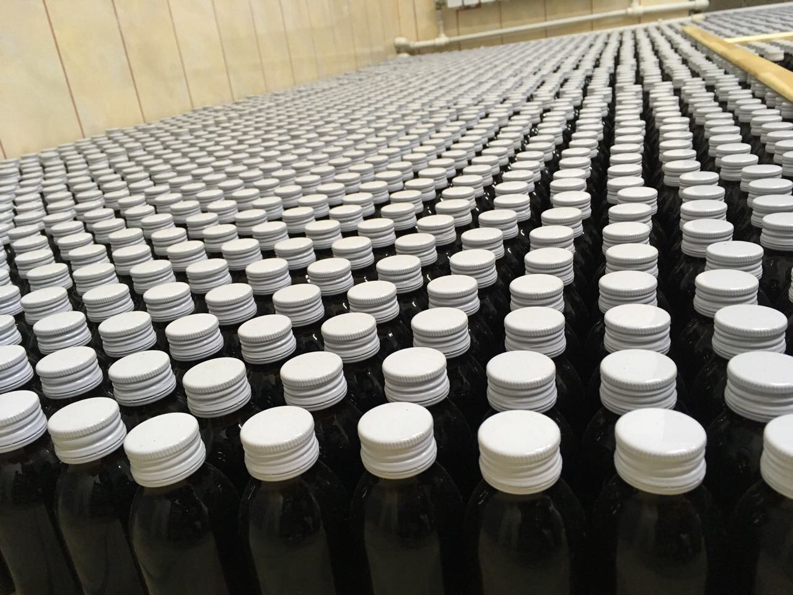
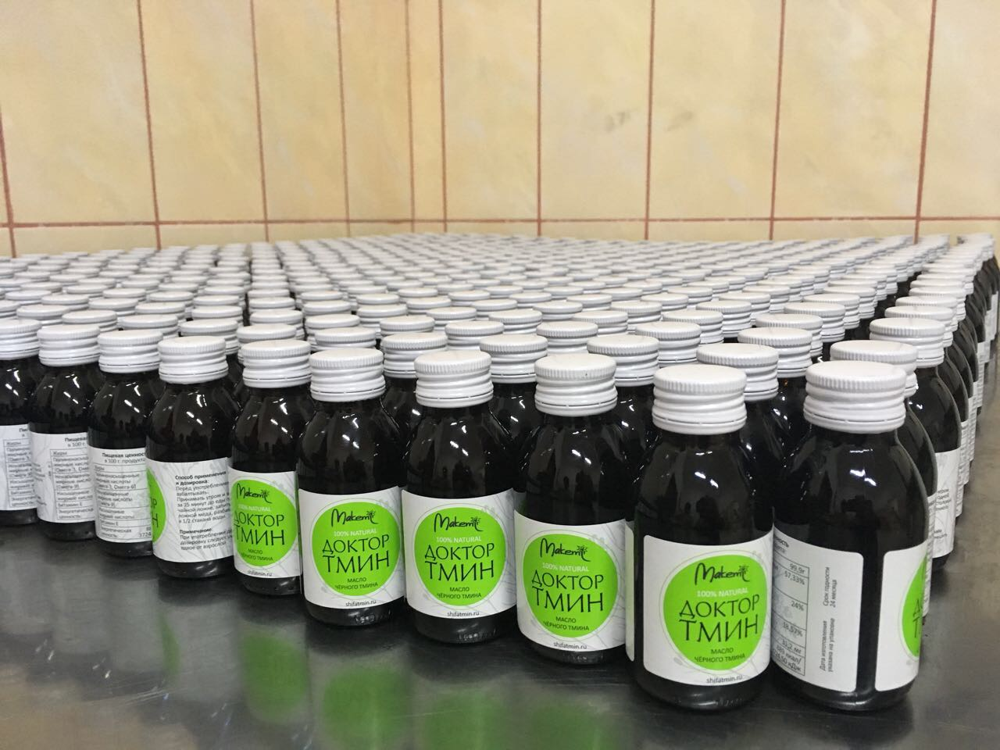
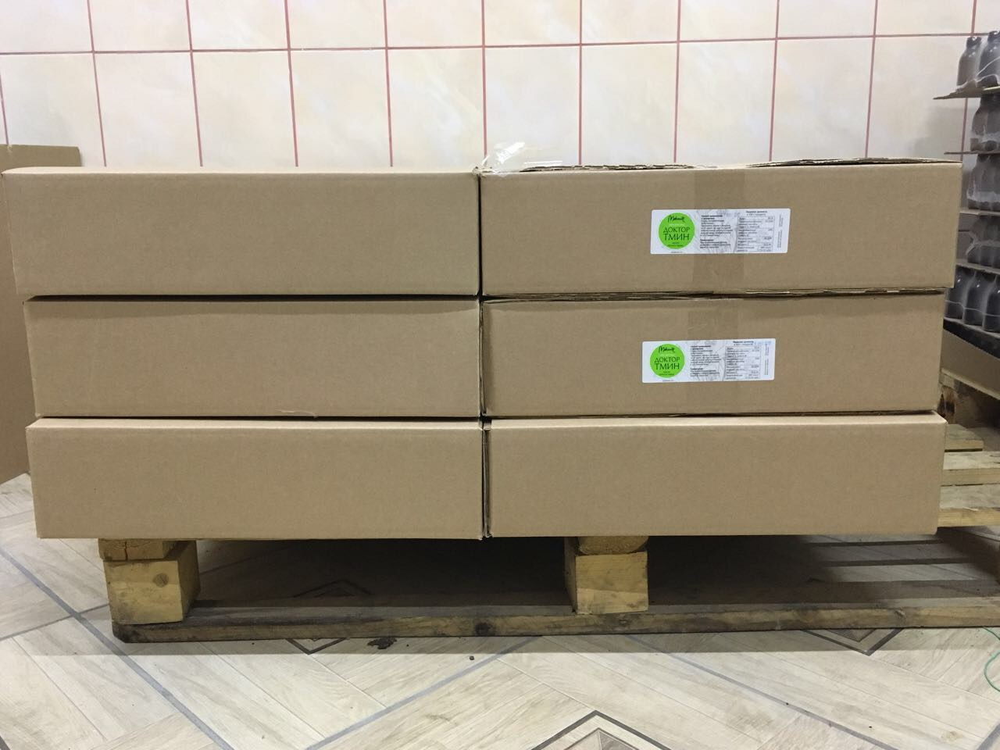
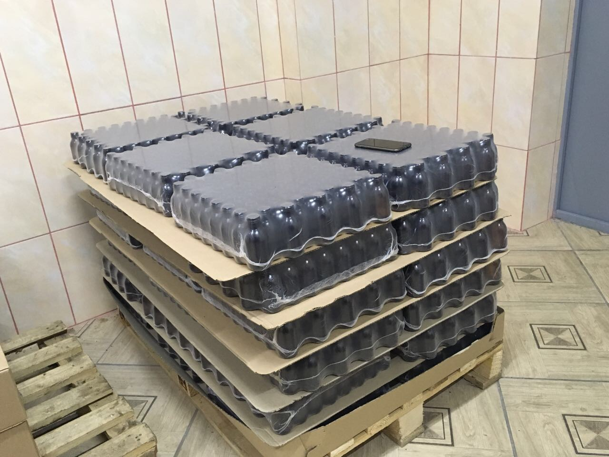
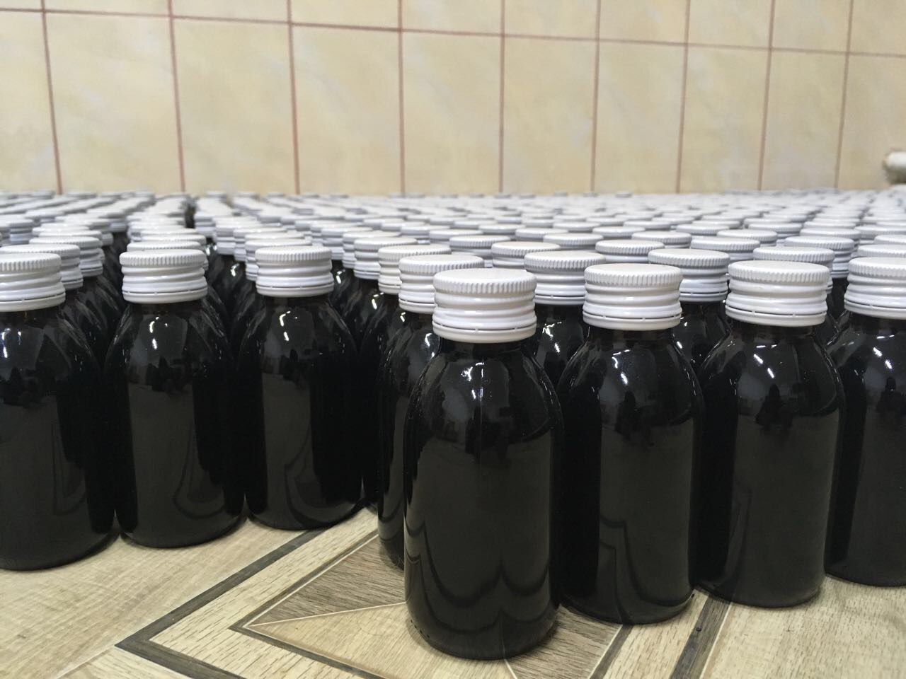

Производство расположено территории Республики Башкортостан, фабрика открыта в 2014 году и на данный момент способна выпускать 20 000 бутылок масла черного тмина ежемесячно.


Производство соответствует всем современным нормам, продукция сертифицирована, соблюдены условия хранения сырья и готовой продукции.


Сырье: качество и сертификация
Существуют разные сорта черного тмина. Насыщенность его семян полезными микроэлементами во многом зависит от места произрастания. По данным последних исследований (университет города Рияд, Саудовская Аравия) только сорт Nigella Sativa имеет медицинские свойства. Он распространен в основном в Эфиопии, из-за чего большинство производителей старается выдать свой продукт именно за эфиопское масло, но часто это всего лишь маркетинговый ход.
У бренда Makemi заключен государственный контракт на прямые оптовые поставки семян черного тмина из Эфиопии. Мы получаем сырье наилучшего качества и максимально бережно относимся к нему при производстве.
У нас имеется сертификат происхождения семян, с которым может ознакомиться любой покупатель. Такой сертификат должен быть у каждого производителя масла черного тмина, так как в противном случае, он может, сам того не зная, получать под видом эфиопского тмина совсем другой сорт семян.
Отжим и отстаивание
В случае с черным тмином очень важно, чтобы масло было получено именно путем первого холодного отжима — только так можно максимально сохранить его полезные свойства. Дело в том, что при горячем отжиме прессованию предшествует этап обработки семян в жаровнях — измельченные семена с добавлением воды обжаривают при температуре 100-110⁰С, после чего уже отжимают.
Такой способ позволяет получать из семян черного тмина почти в два раза больше масла, чем при холодном отжиме, что делает его очень привлекательным для производителя. Но высокие температуры и фильтрация, использующаяся при горячем отжиме, к сожалению, уничтожают значительную часть полезных микроэлементов и витаминов, содержащихся в черном тмине.
Холодный отжим – процесс получение масла из целых семян черного тмина методом прессования при низких температурах. Масла при холодном отжиме получается значительно меньше, зато повышается его качество. Это лишний раз доказывает нам, что хорошее масло не может стоить дешево — ведь только метод холодного прессования может обеспечить маслу натуральность, высокое качество и сохранить все полезные свойства.
Для производства масла черного тмина «Доктор тмин» компания Makemi использует исключительно первый холодный отжим эфиопского сорта семян. После отжима мы очищаем масло методом отстаивания (2-3 недели) в емкостях собственной разработки, которые не дают маслу контактировать с воздухом и окисляться.
Также важно отметить, что можно пить только масло черного тмина первого отжима, т.е. выжатое из семян, а не из уже использованного жмыха. К сожалению, некоторые производители, в целях снижения себестоимости, пытаются отжать сырье несколько раз, что делает их продукцию практически бесполезной, а иногда и вредной для организма. Дело в том, что после первого отжима в прессованных семенах практически не остается полезных веществ.
Розлив и особенности упаковки
Для розлива масла черного тмина «Доктор тмин» компания Makemi использует бутылки из специального сертифицированного темного стекла, которые производятся в Европе на заказ, так как, к сожалению, на сегодняшний день в России тару необходимого качества по приемлемым условиям практически невозможно найти.

Дело в том, что прямые солнечные лучи вредны масла черного тмина, поэтому его необходимо хранить именно в темной стеклянной упаковке. Стекло помогает сохранить полезные свойства продукта и, в отличие от пластика, не вступает с ним химическую реакцию.
Следующий важный, но очень капризный элемент упаковки нашего масла — это металлическая крышка. К сожалению, не все производители упаковки выполняют свою работу качественно, поэтому получить удобную металлическую крышку довольно трудно. Решить этот вопрос можно заменив металлические крышки на пластмассу, но такое решение для нас неприемлемо, так как оно влечет за собой нанесение вреда маслу.
Вы можете самостоятельно провести следующий эксперимент: возьмите две баночки разного масла черного тмина — одну стеклянную, с металлической крышкой (например, наше масло «Доктор Тмин»), а другую пластиковую или же тоже стеклянную, но с пластмассовой крышкой (любого производителя) и просто сравните запах продукта. Вы будете удивлены,
но даже такой маленький и казалось бы незначительный элемент упаковки как крышка — значительно влияет на содержащийся в бутылочке продукт.
Забота о масле
Масло черного тмина полезно в своем первозданном, неразбавленном виде — именно на неразбавленное масло рассчитаны все рецепты по его употреблению. Дело в том, что, к сожалению, многие производители в целях экономии стали разбавлять свою продукцию другими растительными маслами, а это приводит к следующим последствиям:
Уменьшение количества полезных веществ в масле. Разбавление масла черного тмина другими растительными маслами неизбежно приводит к снижению концентрации полезных микроэлементов, которыми так богаты семена черного тмина.
Улетучивание эфирных масел. В процессе разбавления улетучивается большая часть эфирных масел, получаемых из семян.
Риск для здоровья. Некоторые растительные масла могут быть вредны для здоровья при длительном регулярном употреблении. Масло черного тмина предназначено для постоянного употребления, поэтому его категорически нельзя смешивать с маслом, которое потенциально может принести вред.
Снижение эффективности. Как уже говорилось выше, все рецепты по употреблению масла черного тмина рассчитаны на неразбавленное масло, поэтому при употреблении разбавленного масла доза употребления будет соответствовать рекомендованной и эффект снизится (или же пропадет совсем).
Неизвестность. Покупатель обычно не знает, с каким именно маслом смешан продукт. Например, не все оливковое масло вообще можно употреблять в пишу. При этом нечестному производителю наиболее выгодно разбавлять масло черного тмина с наиболее дешевым растительным маслом.
Масло черного тмина «Доктор тмин» производства компании Макеми является 100% натуральным, неразбавленным маслом черного тмина без примесей. Мы заботимся о масле на каждом этапе производства и выпускаем чистый, высококонцентрированный продукт.